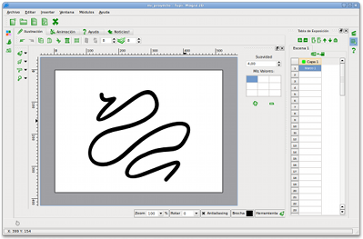
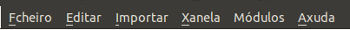
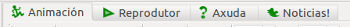
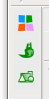

Main Components
Tupi is a suite of tools for 2D
animation created for children from 8-100 years old. When you
think of Tupi, think of it as a toolbox full of different
components, each designed for a specific task. Let’s take a
look at each of the parts that make up the work environment, this
really is a must before you start using Tupi.
Note: Because we are still in a
beta phase of development, it is likely that some options and/or
features are different within the interface or appear in
different places. Much of the information found in this manual is
subject to correction in future versions.
The Following is a typical display of the
running application:

Fig. 4 Tupi ’s GUI
Now, let’s take a closer look at its
components.

Fig. 5 Diagram of the Tupi
components
-
Top Menu Bar: this is the conventional menu located
along the top of the window like you find in most programs.
It is separated into categories (File, Edit, Insert,
Window, and Help). All the main options that
affect the whole program are here.

Fig. 6 Top Menu Bar
-
Project File Management Panel: is composed of buttons
associated with the task of managing project files such as,
create a new project, opening an existing project, saving,
saving under a new name and closing an open project.

Fig. 7) Project File Management
Panel
-
Workspace: this is the main area of the application,
the space where you design, build and visualize your
animations. The workspace is comprised of four tabs,
each of which contains one of the following modules:

Fig. 8 Workspace Tabs
- Animation Module: this module is
used to build the graphics of each frame which will appear
in your animation. It is little more than a small vector
graphics editor, very simple ... for now.
- Player Module: This is an animation
viewer that you can use at any time to give you an idea of
how your animation is looking.
- Help Module: This is the module
that you are referring right now.
- News Module: is a window directly
onto our Twitter
account. |Here you can find the latest news on this
project, including new releases, the functionality
implemented in the development version, news, etc.
-
Left Sidebar: In this component there are three
buttons associated with different features of drawing in the
workspace:

Fig. 9 Left Sidebar
- Colour Palette: This button
displays a panel through which you can choose the colour or
gradient you want to use when painting with any type of
brush.
- Brush Properties: This button
displays a panel with the current properties of the brush,
such as the size of it and some characteristics of the
stroke.
- Object library: This button
displays a panel with the object management interface of
the library associated with the project. If you have an
object or a particular image you want to store and reuse in
different frames of your animation, you can use this
component.
-
Right Sidebar: similar to the left, but contains
buttons associated with the animation process.

Fig. 10 Right Sidebar
- Scene Manager: This button displays
a panel that allows the management of the scenes that make
up an animation. If you don&rsqou;t yet know what a
scene is, don’t worry, we’ll talk about it
later.
- Exposure Table: This button opens a
side panel displaying the table of exposures that make up
each scene. Although it sounds complex, this table is
really just a list of frames on which you illustrate your
animation. Through this component, you can control the
layers and frames of your project. Do you know what a
layer? Here is a simple definition: imagine you take a bit
of red paint and cover a sheet of paper with the colour and
let it dry, then apply on the same sheet a coat of green,
wait a while and then apply blue. Although in the end, your
paper will look like the last colour you used, really you
know that there are other colours below. Think of each of
these colours, as layers, that is, levels of paint that you
define yourself over a frame. Layers are very useful to
achieve certain effects and techniques which you can
discover and practice later.
- Help Manual: This button displays
the manual you’re referring to now.
-
Bottom Bar: on this region will find a stopwatch
button, this is the option to activate the Timeline
panel. This tool, well used by animators from other programs,
allows you to manage layers and frames, as well as visualize
how the pieces of your animation will unfold in real time.

Fig # 11. Bottom Bar
- Properties Panel: This zone is created
temporarily each time you click on one of the buttons are in
the sidebars or at the bottom. Although the initial image
(Fig. # 5), the panel appears on the right side of the
interface, depending on where is the button you choose, may
appear on the left side or even in the bottom. If you go back
to click on the button initially selected, then the properties
panel is closed.
-
Status Bar: located at the bottom of the program, this
bar has only one purpose, that is to display the coordinates
(x, y) of the mouse cursor as it moves over the
workspace in the Animation
Module .

Fig # 12. Status Bar